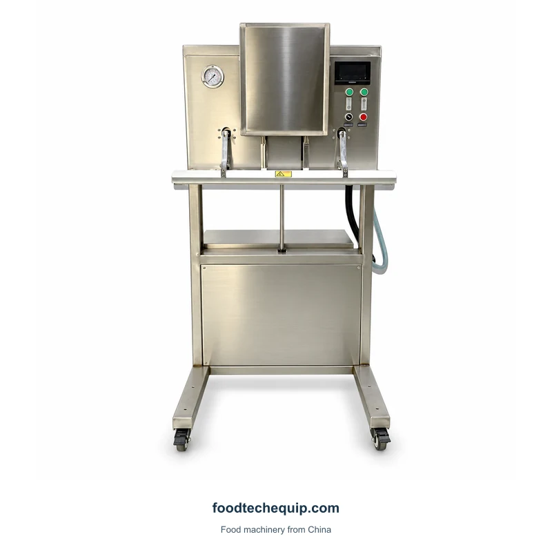

Embalagem a vácuo
Embaladora a vácuo 600 com aspiração externa e altura ajustável
Uma máquina de embalagem a vácuo externa com altura ajustável e uma seção de trabalho frontal.
Ver equipamentoUma máquina de embalagem a vácuo externa de piso com um conjunto de elevação e seção de vedação frontal.
Seleção de equipamentos · Orientação para instalação · Suporte remoto
Explore informações do produto ↓Indique a configuração DZQ-1000 OL e explique como o saco cheio será apoiado. Informe as dimensões totais da embalagem e o espaço previsto para instalação.
Escolhendo um layout de embalagem a vácuo ↗| Parâmetro | Valor | Unidade | Configuração |
|---|---|---|---|
| Dimensões gerais | 125*96*180 | cm | DZQ-1000 OL |
| Potência nominal | 1,1 | kW | DZQ-1000 OL |
| Material da carcaça | aço inoxidável 304 | — | — |
O pacote cheio deve caber o arranjo de trabalho e permanecer apoiado durante o carregamento. Discuta a boca do saco e o requisito de fechamento ao lado do envelope completo do pacote. Trate qualquer tarefa separada de fechamento de sacos como sua própria etapa de processo.

Uma máquina de embalagem a vácuo externa com altura ajustável e uma seção de trabalho frontal.
Ver equipamento
Máquina de embalagem a vácuo externa com elevador vertical e barra de vedação frontal.
Ver equipamento
Embaladoras a vácuo com aspiração externa, disponíveis em versões verticais e com unidade de elevação.
Ver equipamento